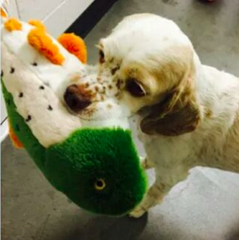

STEVEN AVERY TRIAL
TRANSCRIPTS AND DOCUMENTS
 Anonymous jump-started this project by working with SkippTopp and fronting the initial costs of obtaining the documents. Zoey is Anonymous’ adopted dog who loves to sniff everything.
“I would like to give much thanks to SkippTopp for doing all the heavy lifting and for leading the initiative to make this project possible. It’s great to see strangers come together and collaborate. I don’t have any opinion on the documentary nor do I have any affiliation with the parties involved. My only purpose was to help facilitate access to public records, the procurement of which were prohibitively expensive. Thank you everyone for chipping in!” – Anonymous
| Gloria Koss | Eric Pheterson |
| Emma Gliddon | Patrick Cho |
| Scott Nisley | Diana Poulsen |
| grappler0000 | Nicole Martynowicz |
| Sarah Weigel | Sarah Alli-Sahadeo |